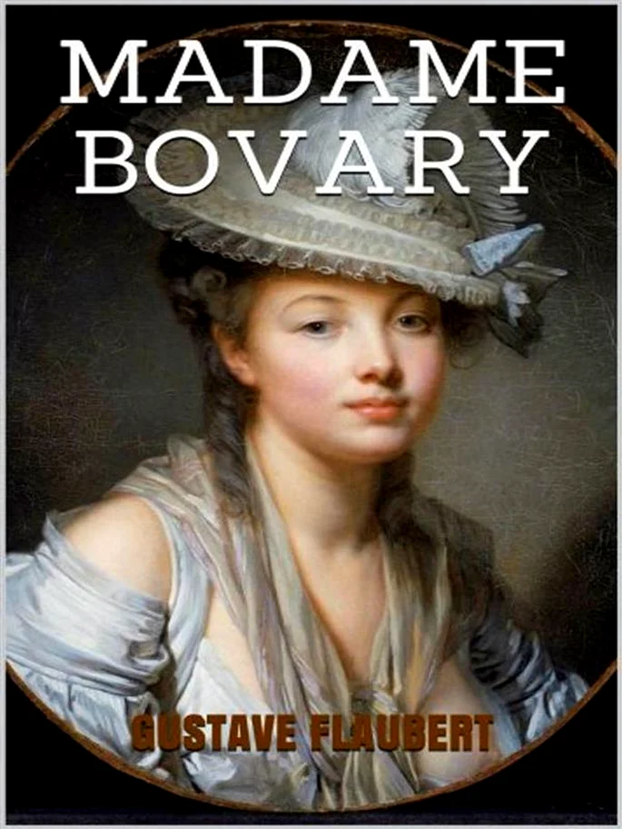

Madame Bovary

O enredo gira em torno de Emma Bovary, casada com o médico Charles. Emma vive imersa na leitura de romances românticos e, por viver um casamento enfadonho, procura no adultério a libertação de seus problemas. A trama possui um desfecho trágico, e da criação de Flaubert partem grandes linhas de força do romance moderno e sua repercussão no contexto literário francês e mundial é intensa e permanente.
Clique para ser redirecionado para o link de Download